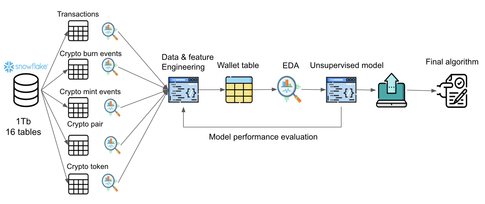

Proposal - Defined Finance
Contents
Proposal - Defined Finance¶
Feature Engineering and Model Selection for Wallet-Based Clustering¶
UBC Master of Data Science Capstone Project - May-Jun 2022
Berkay Bulut, Mohammadreza Mirzazadeh, Ramiro Mejia, Vadim Taskaev
Mentor: Quan Nguyen
Executive Summary¶
Defined Ltd is a startup in the blockchain and de-centralized finance space. Defined is building a public data platform called DeFi dashboard that helps users to query chain data and interact with major blockchains. One of the long-term goals of the company is to create tools to help traders engage with the crypto-currency environment. This project aims to explore and leverage big data collected from major public blockchains. Our main goal is to cluster the wallets based on their summary characteristics, assumptions, and strategies using unsupervised learning techniques.
I. Introduction¶
What is Blockchain?¶
Blockchain is a distributed database in which a record of transactions made is shared and verified among the nodes of a computer network. Technology allowed for invention and adoptation of digital assets and decentralized financing among many others
What is Decentralized Financing (DeFi)?¶
Decentralized Financing is a new form of trading and financing using blockchain. DeFi platforms allows for trading in Automated Market Maker with lowered fees and increased gains. Investors and traders deposit their money into pools (smart contracts) instead of trading against each unlike conventional exchange markets.

These pools of capital can be used for various financial applications. Trader inputs Token A + some fee amount to retrieve desired Token B. For example inputs Ethereum to receive Bitcoin. A wallet can execute 3 types of transactions in DeFi:
Swap: Swap token A for token B in a pool.
Mint (Deposit): Deposit money into a pool.
Burn (Withdraw): Withdraw money from a pool.
II. Procedure and Methodology¶
Objective and Research Question¶
Given information collected across all major public blockchains, the project aims to develop wallet-specific engineered features and to use them to train an unsupervised learning model that would cluster wallets based on their underlying trading characteristics. Such clustering would allow to identify patterns in the trading assumptions, strategies, and key signals used by wallet-holders and segregate them on these characteristics along their overall profitability. In other words, we aim to reveal signature patterns in the trading behavior of more successful traders in a blockchain that distinguish them from less their less successful counterparts, and thus estimate patterns in the flow of capital.
We state our research question as follows: “How to best generate wallet clusters that identify successful traders and reveal common trading patterns among traders?”
The final product deliverables we aim from this projects are as follows. First, we will engineer wallet-based features from the transaction-based features provided and conduct exploratory data analysis, followed by any further transformation required to ensure their suitability for a machine learning application context. Second, we will use these engineered features as an input to an unsupervised machine learning clustering algorith, which will cluster wallets based on their relative resemblance. We will attempt to label them in a human-interpretable manner based on their summary characteristics. The combined scripts and reports will be structured in a the github repo provided: https://github.com/company-z/ubc-mds.
Data Set and Sampling Methodology¶
The data provided is comprised within a Snowflake relational database, and relating to a list of transaction-based observations. Transactions types include mint, burn, and swap transactions. From each transaction, the token pair transacted, the base token and USD transaction value, the transaction execution event time can be retrieved, along an array of other potentially relevant metrics, such as gas price and related labels.
This size of this data set exceeds 400GB, and is not feasible to interact with in its entirety without leveraging a virtual machine. Rather, in order to facilitate collaborate development throughout this project, we have opted to randomly sample wallet-based data using SQL queries from the database at a scale that permits running scripts on our local machines. By drawing a representative sample of data from the data set and applying bootstrapping, we aim to benefit from Maximum Likelihood Estimation to get a sense the underlying data distributions.
Feature Engineering¶
A key success factor in developing a well-performing wallet-based clustering algorithm will require devising and engineering meaningful features from respective underlying transaction-based data. The raw data queried is structured such that each observation refers to a particular transaction, each of which is associated to a given wallet, and for each of which we know the transacted pair, amount, execution timestamp, and so on. The types of transactions include Mint, Swap and Burn transaction tables. However, our access to underlying data is least limited for Swap transactions with the liquidity pool.
Aggregated wallet-based features of interest should convey insight on a given wallet holder’s summary statistics, trading signal assumptions, and overall strategy. To start, we engineer wallet-based features, with the option of refining and expanding the scope of feature engineering further in the coming milestones should it be deemed to improve model results. The following features will be further explored throughout the project milestone and its iterations:
the count of transactions, per mint, swap, and burn transactions types, as well as their total,
the count of wallet-to-wallet transactions,
the count of transactions per active trading period,
the total count of distinct tokens transacted,
the degree to which wallet transactions deal with stable tokens (relative to non-stable tokens),
weighted average of relative token market cap as proxy for risk tolerance in terms of the selection of tokens transacted with,
weighted average of standard variance of token base price as a proxy for risk tolerance in terms of price fluctuations of tokens transacted with,
the trading consistency as a measure of the degree to which wallet transactions timestamps occur at even intervals over time,
the average gas fee paid per wallet across its underlying transactions as a proxy for the aggressiveness of trade placement relative to other traders,
n.b., as is, this feature is unlikely to derive any insight on wallet characteristics, as it rather reflect underlying transaction-based smart contract complexity and network activity, so we will only use it if we manage to derive more meaningful information from it,
the cumulative wallet profitability based on liquidity pool, mint, burn, and swap transactions, computed by updating the tokens held per wallet after every transaction and referencing its execution timestamp to derivate weighted average wallet valuation (from which profitability can be computed as a ratio),
this would require keeping a dictonary of the amount of tokens held, updated after each transaction, along with the transaction timestamp.
Other features to potentially consider:
the extent to which particular base token price signals are used for trading, e.g., preceeding trend in token over time prior to trade,
the correlation of wallet transactions relative to traditional indicators.
Exploratory Data Analysis¶
As part of our data analysis, we are going to explore some feature relationships before adding them to the model. Our goal is to capture insights that will help us to discard or add variables to the model. We can also utilize external data to compare and find useful patterns, for example, by checking the market price series of a cryptocurrency and how risk-averse is the trader based on its transactions in the blockchain during a window of time.
Modeling Approach¶

Our approach to reaching our objectives is as follows:
Performing research on data tables and extract
Implementing data engineering and feature engineering skills to create
Wallet tablewhich haswallet_idsand their according features.Evaluating features that have been extracted for each wallet by performing EDA and some statistical analysis.
Implementing an unsupervised learning model
Assessing the performance of our model by measuring the interpretability of the clusters.
Rerunning steps 1 to 5 to enhance model performance
Delivering final report and algorithm
We elaborate on the modeling workflow below:
First, we will fit a baseline model to generate benchmark model performance results, which we will then compare to further model iterations. A suitable baseline model of choice for this clustering algorithm is K-Means, an unsupervised learning technique that is both relatively simple and intuitive. To this end, we will use the scikit-learn library.
Second, we will experiment with alternative more advanced clustering modeling techniques that may be better suited to capture more complex relationships among the data. We will use Principal Component Analysis (i.e., PCA) to apply dimensionality reduction to the engineered features and summarize pattern and insight from the features. We will then apply Density-Based Spatial Clustering of Applications with Noise (i.e., DBSCAN) to generate clusters by gathering insight on the density of observations within clusters, thus generating clusters that may possible be found to be more meaningful in terms of their interpretation. Finally, we will train an array of Neural Network models that will leverage the large volume of transaction-based data, though possible at the expense of model interpretability and challenges with parameter tuning. We will then select the model architecture that provides best overall fit to the data given the model evaluation metrics of choice, all while assessing the results generated in a human-interpretable manner.
Third, we will aim to refine our model of choice by tuning its hyper-parameters, while possible also including an outlier detection pipeline to improve the generalization of results to new unseen observations.
Throughout this modeling process, we will place particular attention on the following potential problems we envisage:
with data being stored across a relational database, we will need to ensure that SQL queries of transactions are comprehensive for each given wallet,
we will need to find a suitable trade-off between utilizing a sufficiently large window of underlying transactions while using an excessively large sample size,
selecting most relevant variables by iteratively assessing the suitability of engineered features, and
we will wrangle data and, fit and evaluate associated models in a manner that is mindful to big data virtual machine utilization best practices.
Model Evaluation Metrics¶
Since it is an unsupervised learning model, common supervised model evaluation metrics (i.e., recall, precision, f1-score) are not useful to measure the performance of the model. We plan to tackle this problem using different types of model evaluation strategies. Model evaluation in the context of unsupervised learning methods offers a way to pick suitable input hyper-parameters to the clustering algorithm, namely the number of clusters, rather than evaluate its performance per say.
First, we plan to use internal model evaluation techniques to measure intra- and inter-cluster distance. Ideally, we want homogenous clusters that are well separated from other clusters. For this, we are going to base our results on the Elbow plot and the Silhouette score to assess the number of clusters that offers most generalizable results.
Second, we will compute key summary statistics per each cluster to derivate human-interpretable wallet-based metrics of risk tolerance, profitability, and trading behavior and trading signals used more broadly. We will also incorporate correlation to external variables as needed.
Finally, we plan to average cluster labels and make a manual evaluation of the results. We will labels clusters such that we comprehensively captures the underlying charactersitics, assumptions, and strategies of typical wallet holders comprising every given cluster generated.
For instance, we will evaluate the performance of the KMeans baseline clustering algorithm using intra-cluster and extra-cluster distances in the context of an Elbow plot and a Silhouette score plots per an array of plausible number of clusters \(K\), a required input hyper-parameter when instantiating a KMeans model object in sklearn. The KMeans model with most suitable \(K\) will hereafter be referred to baseline model. We then repeat this model evaluation process for the alternative models generated and perform model selection.
III. Discussion and Conclusion¶
Baseline Models Results¶
Challenges¶
Throughout this project, we identified some challenges in terms of computation of the data and evaluation of results. We have millions of transactions spread into different tables in a relational database model. The relationships between tables are not simple, since our objective is to aggregate the transactional data to a wallet level. Due to the amount of data, we plan to sample wallets randomly and by transactional counts, thus reducing the computational cost of each iteration of the model.
In addition, in the database, we only have visibility on how a trader swap tokens. Moreover, there is only data on transactions within the liquidity pool. Therefore, we must find reasonable strategies to aggregate data and create relevant features that capture patterns within the blockchain.
IV. Expected Timeline¶
Date |
Milestone |
Description |
|---|---|---|
2022-05-06 |
Understanding the data |
Connect with partners, Define problem scope and understand data |
2022-05-12 |
Baseline Model |
Build initial master table and conduct feature engineering, Develop modeling pipeline |
2022-05-20 |
Second Model |
Improve on data engineering |
2022-06-03 |
Third Model |
Finalize feature engineering development,Improve model using unsupervised algorithms |
2022-06-10 |
Final Model |
Finalize model by tuning its hyper parameters, Finalize production ready code |
2022-06-29 |
Final report |
Prepare final report, Finalize the documentation |